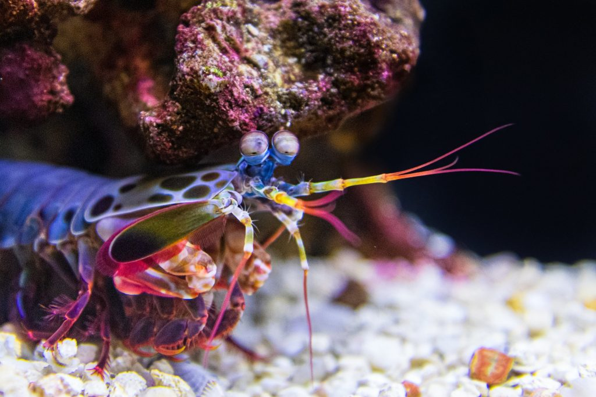
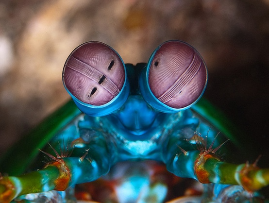

Fatos sobre o Stomatopoda
Informações gerais.

Stomatopoda (ou estomatópode), de nome científico Odontodactylus scyllarus chamados popularmente de tamarutacas ou de lacraias-do-mar no Brasil, é uma ordem de crustáceos marinhos da subclasse Hoplocarida, que agrupa cerca de 400 espécies, caracterizadas principalmente pela morfologia da segunda pata torácica, que é modificada em apêndice subquelado, lembrando uma pata de louva-a-deus.
Sua classificação científica é:
| Reino | Filo | Subfilo | Classe | Subclasse | Ordem |
|---|---|---|---|---|---|
| Animalia | Arthropoda | Crustacea | Malacostraca | Hoplocarida | Stomatopoda |
O animal mais forte do mundo
O Camarão Mantis esmagador possui dois apêndices bem desenvolvidos (semelhantes a um martelo), chamados de Porretes de Dáctilo. Com essas “super patas” o animal espanca e esmaga suas presas em uma intensidade de aproximadamente 60 kg/cm² (daí o motivo de um de seus nomes ser lagosta-boxeadora).
O camarão mantis possui uma super visão
Uma das espécies de camarão mantis (Gonodactylus smithii) têm os olhos mais complexos do reino animal e é capaz de ver cores invisíveis a vários outros animais, do ultravioleta ao infravermelho. A descoberta foi anunciada por cientistas suíços e australianos.
Muito além de suas peculiaridades motoras, o Camarão Mantis apresenta uma extensa gama de características únicas. A mais emblemática delas, é o fato de que possui o mais complexo sistema de visão de cores do mundo animal, conseguindo processar 16 cores ao todo.
Enquanto nós humanos conseguimos processar somente três tipos de cores primárias (vermelho, verde e azul), esse distinto animal é capaz de enxergar 12 cores primárias porque possui 12 cones de percepção de cor. Os quatro cones restantes, lhe permite enxergar imagens multiespectrais, como a luz ultravioleta.